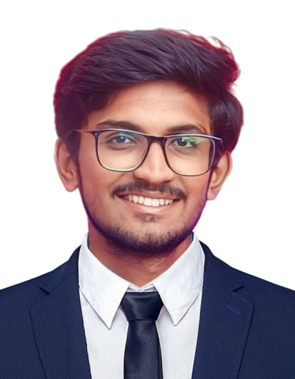

Logesh kannan C

Full Stack Developer
Summary
To work in an organization that provides me ample opportunities to enhance
my skills and knowledge along with contributing to the growth of the
organization.
Education
-
MCA(Master Of Computer Application) - Rathinam Technical campus,
Coimbatore.
72% (2023 — 2025).
-
B.Sc(Computer Science) - Ayya Nadar Janaki Ammal College,
Sivakasi.
72% (2020 — 2023).
-
HSC - Nadar Matriculation Higher Secondary Schhol,
Rajapalayam.
67% (2018 — 2020).
-
SSLC-Sri vaiyapuri vidyalaya Matric Higher Secondary School,
Sankarankovil.
73% (2017 — 2018).
Work experience
-
Quiz project
- I am doing a quiz project in full-stack.
-
In full-stack web development and I will build both the client-side
(frontend) and server-side (backend) of a web application, requiring
knowledge of technologies like HTML, CSS, JavaScript, and various
backend languages like Node.js,Express Js and various Database
language like MYSQL.
-
Sample web page
-
I am doing a sample web page in full stack that include
Home,courses,contact us,about pages.
-
In full-stack web development and I will build both the client-side
(frontend) and server-side (backend) of a web application, requiring
knowledge of technologies like HTML, CSS, JavaScript, and various
backend languages like Node.js,Express Js and various Database
language like MYSQL.
Skills
- Team Work ⭐⭐⭐⭐
- Quick Learning ⭐⭐⭐⭐
- Communication skills ⭐⭐⭐⭐
- Leadership qualities⭐⭐⭐⭐
Achievements
- Finish Marathan(12.5km) .
Certifications
- ASKEVA WhatsApp API Based Chatbot Workshop.
-
All India Council for Technical Education. (Heartfulness Education Trust
in Kanha Shanti Vanam).
- TCS ION Career Edge-Young Professional.
- India @75 Quiz Contest.
-
7"International Conference on Smart Technologies and Innovations in
Education and Research - (STIER - 2025) held during April 11 & 12,2025.
Other